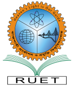

Rajshahi University of Engineering & Technology (RUET) is the prestigious public Engineering University & center of excellence offers high quality education and research in the field of engineering and technology. RUET is well balanced urban and natural environment and convenience. Rapid globalization, industrialization, presence of problems, depletion of natural resources, environmental damage, world financial insecurity, poverty, etc are the global challenge for human being as a whole. Handling such global issues require wide range of quality people share their knowledge to cooperate and take action. RUET is the center of excellence to cultivate such talented individuals who take the lead of such issues sharing their technical knowledge and experience is the most important duty of this university. RUET not only serve for the expectation of public but also contribute to human society as a whole.The university comprises engineering and sciences departments’ offers under-graduate and post-graduate degrees. Every year most brilliant students are enrolled for the undergraduate program through transparent and standard admission test. About 3000 students are pursuing their higher study in this green campus including under-graduate and post-graduate with over 200 prominent faculty members of diverse field of expertise. The university also receive a significant numbers of international students are continuing their higher study in this campus.The faculty members and students (UG & PG) of this university engaged with qualitative research work in a multiple research fields and well equipped modern laboratory environment. The faculty members invest their most of the time in research activities jointly with foreign faculties beyond their regular academic duties. Every year the university received exiting number of research paper published by the students and faculty members in the world class high impact factor peer reviewed international journal.The graduates from this university is well enough to cope any challenge in the field of engineering, technology, research, leadership, management, etc on demand of national and global needs. Many of the students and faculty members receive full funded international scholarship for their higher study and appoint in world top rank universities as a quality faculty members and researchers upon completion the degree. RUET is committed to continue the progress and contributes on national and global development
